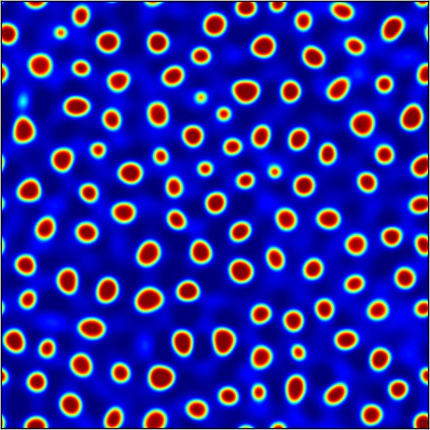
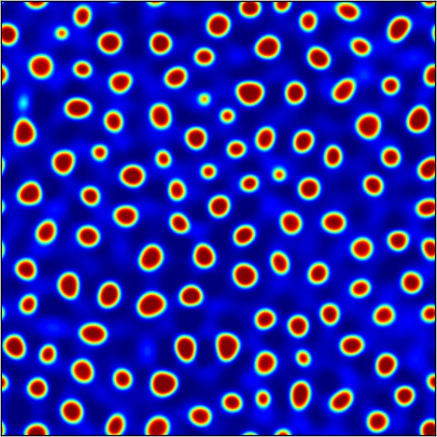

The following simulations are for the Cahn-Hilliard-Cook equation with periodic boundary conditions with interaction length ε=0.005, total mass μ=-0.59, and noise intensity σ varying. All simulations were done using 2562 modes, and in order to avoid aliasing the nonlinearity is computed with 5122 modes. For each of the simulations, noise is only acting on modes with wave numbers |(k,m)| between r0 and r0+10, where the value of r0 is always 30. The movies are all for early time: tfac=0.01.
| σ = 0.1
| σ = 0.2 | σ = 0.3  |
| σ = 0.4 | σ = 0.5 | σ = 0.6 |
| σ = 0.7 | σ = 0.8 |